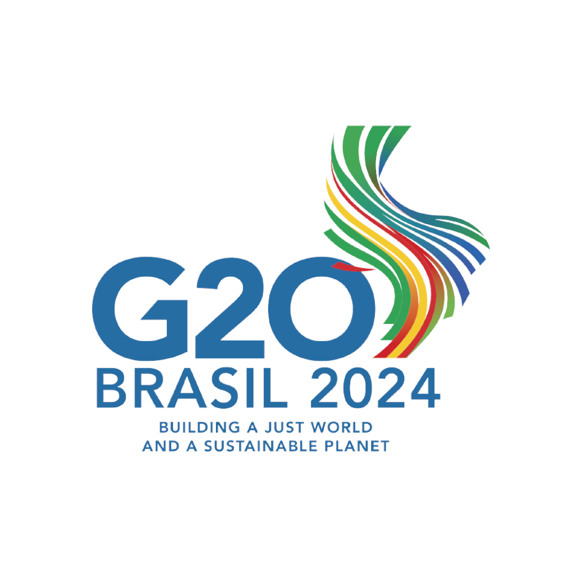
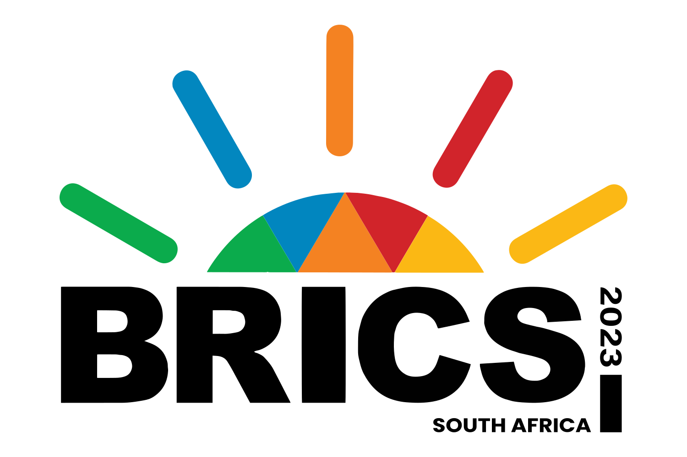

Trusted by Global Institutions & Featured In




Global innovator and Harvard Fellow leveraging technology and policy to build resilient, equitable healthcare systems.
Explore My Expertise
My journey began not in a boardroom, but in a lab. A PhD in Medical Biochemistry provided a foundational understanding of human health, but it was the distance from a lab bench to a patient's bedside that defined my mission: to bridge the vast gap between brilliant ideas and real-world impact.
This conviction led me to co-found SOUTH AFRICA MAKES, where we challenged the status quo of global healthcare supply chains using digital manufacturing. We developed a model for local innovation that now serves as a case study for emerging economies worldwide.
My guiding principle is simple: 'innovation without inclusion is not progress.' This perspective informs my contributions to African Union, G20, and BRICS policy forums on equitable innovation ecosystems.
I’m driven to ensure that the next generation of digital health systems are not only intelligent — but also inclusive.